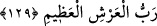

Rüşvet almaksızın, acırlar, yardımda bulunurlar
Ey Süleyman! Kuzgunla doğan arasında
Allah’ın hilmine bürün de bütün kuşlarla uzlaş
Ey hilmi yüzlerce Belkıs’ı zebûn eden!
Ey “kavmime sen doğruyu göster, onlar bilmiyorlar” diyen!
Hak yüzbinlerce kimya yarattı ama insan,
Sabır gibi bir kimya görmedi
Noksan sıfatlardan münezzeh olan Allah’tan bizi hilim ve kerem sahibi kimselere
katmasını, kötü ahlak ve huylardan arındırmasını niyaz ederiz.
129. Eğer (inanmaktan) yüz çevirirlerse de ki: “Allah bana yeter. O’ndan başka
ilah yoktur. O’na dayandım. O, büyük arşın Rabb’idir.
Rasûlullah (s.a.) teselli edilmek üzere şöyle buyurulmuştur: “Eğer” sana inanmaktan
ve senin nasihatini kabul etmekten “yüz çevirirlerse” ve sana tâbi olmazlarsa “de ki:
“Allah bana yeter.” O bana kâfîdir. Çünkü Allah, onlar tarafından maruz kalacağın
kötülüğe karşı seni koruyacak, onlara karşı sana yardım edecektir.
Burada şuna işaret edilmektedir: Hz. Peygamber (a.s.) tarafından risâletin tebliğ
edilmesi, O’nun Allah’a yakın olmasını ve Allah’ın O’nu kabulünü gerektirmektedir.
Peygamber risaletini tebliğ edince Allah katından kabulü ve O’nun kurbeti (yakınlığı)
hasıl olmuş demektir. Onlar ister kabul etsinler ister yüz çevirsinler.
“O’ndan başka ilah yoktur” Bu ifade daha önce geçen ifadeye delil gibidir.
Fakir (Bursevî) der ki: Bu kelime-i tayyibe “Lâ ilâhe illallâh” hükmündedir. Çünkü
zamir (hüve, hû) âyetin baş tarafında zikredilen lafza-i celâle âiddir. “Hû”nun zamir
olması, onun isim olmasına ters düşmez. Çünkü zamirler isim cinsindendir. Tasavvuf
sâlikleri arasında “Hû” zamiri ile zikir yapılmasının meşhur olması, “Hû”nun isim
olması sebebiyledir. Kâinâtın varlığı mevhum (hayâlî), Hakk’ın varlığı ise muhakkak
(hakîkî) ve mâlum olduğuna göre, özellikle mutlak olarak zikredildiğinde hakîkatte
Allah’ın rakibi bulunmadığı için “Hû” zamiriyle Allah Teâlâ’ya işâret geçerli ve doğru
olur. Henüz seyr ü sülûkün başında olan (mübtedî) kişi, gaybet hâlinde olduğu için onun
“Hû” zamiriyle zikir yapması uygundur. Fakat küllî olarak terakkî ettiği vakit “Hû” ile
ancak hüviyyet-i mutlakaya işaret edilir. Allah’tan bizi tahkik mertebelerine ulaşmaya
muvaffak kılmasını niyaz ederiz.
“O’na dayandım.” O’na güvendim. Dolayısıyla ancak O’ndan umar, ister ve ancak
O’ndan korkarım. Tevekkül, kalbin Allah’a itimad etmesi, Allah Teâlâ’ya bağlı olduğu